Marke · v1 · September 2026
mccain digital
Das Zeichen ist ein Block aus Pixeln, der sich aus Staub zusammensetzt – links kommen die Daten an, rechts steht das Produkt. Alles auf dieser Seite ist aus der Regel berechnet, nicht als Bild abgelegt: Größe, Farbe und Bewegung folgen derselben Funktion. Unten liegt jede Datei zum Herunterladen.
01
Konstruktion
Vier Zahlen, und jeder im Team kann das Zeichen reproduzieren. Kein Buchstabe, keine Figur – eine Regel auf einem Raster.
- {{ k.label }}
- {{ k.value }}
- {{ k.note }}
Unter 40 px lässt die Regel den fernen Staub weg, damit die Kachel scharf bleibt; unter 16 px steht die Platte allein. Freiraum rundum: eine Viertelkante – nichts berührt die Platte, auch die Wortmarke nicht. Kleinste Kachel: 16 px am Bildschirm, 6 mm im Druck.
02
Fassungen
Der Standard ist das freie Zeichen ohne Platte – leichter, und auf der Website, in Dokumenten und Social genau richtig. Die Platte bleibt dort, wo ein Grund gebraucht wird: App-Icon, Favicon, Avatar.
{{ t.note }}
Das Lockup in vier Größen: Kachel 24/28/32/46, Wort 15/17/21/33. Der Abstand zwischen Kachel und Wort ist immer die halbe Kachelkante.
Ohne Platte
Auf der Website und überall, wo die dunkle Platte zu schwer wäre, steht das Zeichen frei: farbig auf Hell, weiß auf Dunkel, Indigo oder Navy einfarbig. Kein Rahmen, kein Grund – der Staub braucht dann eine ruhige Fläche.
{{ f.note }}
 mccain digital
mccain digital
mccain digitalOhne Platte ist das Zeichen etwas größer als die Kachel: 34/28/24 statt 28/24/20 neben demselben Wort – der Staub zählt nicht als Fläche. Abstand zum Wort bleibt die halbe Zeichenkante.
03
Wortmarke
Instrument Sans 600, −0,03 em, immer klein geschrieben – „mccain digital“, nie „McCain Digital“ im Logo. Zwei Fassungen: die ruhige als Standard, die mit Verlauf für Stellen, an denen die Marke allein steht.
Navy auf Hell, Weiß auf Navy. Navigation, Fuß, Dokumente, Signatur.
„digital“ trägt den Verlauf des Zeichens. Titelfolien, Social, große Flächen – nie unter 24 px.
Weiß, dieselben Maße. Die Verlaufsfassung funktioniert auf Navy ebenso.
- {{ r.k }} {{ r.v }}
04
Farbe
Navy trägt, Indigo zeigt. Die vier Verlaufsfarben gehören dem Strom und dem Zeichen – als Fläche kommen sie nie allein vor.
linear-gradient(90deg, #FFB46B, #FF5A8C 33%, #C05CFF 66%, #5FC3FF)
05
Typografie
Zwei Familien, zwei Aufgaben. Instrument Sans spricht, JetBrains Mono misst.
Aa Gg 0123
Überschriften 600–700 mit −0,03 bis −0,04 em, Fließtext 400 bei 1,55 Zeilenhöhe. Buttons 600. Die Wortmarke.
0,25 ms · 4×100
Eyebrows in Versalien mit .1–.12 em Laufweite, Zahlen, Labels, Code, Datenknoten. Nie für Fließtext.
06
Icons
Dünne Linien, 1,75 Strich auf 24er-Raster, runde Enden – Lucide-Stil. Farbe kommt aus dem Text (currentColor); Indigo nur im aktiven Zustand. Die einzige Ausnahme ist das Pixel: Ein KI-Zustand darf ein Pixel im Verlauf tragen, sonst nichts.
{kind=link}
<svg width="18" height="18" aria-hidden="true"> <use href="/brand/mccain-icons.svg#arrow-right"></use> </svg> /* Strich und Farbe kommen aus dem Symbol: 1.75, currentColor, runde Enden */
07
Bewegung
Drei Zustände, und das Zeichen bekommt keine weiteren. Eine Kurve für alles: cubic-bezier(.2, .8, .2, 1). Kein Federn, kein Hüpfen. Wer weniger Bewegung eingestellt hat, sieht das fertige Zeichen.
{{ m.note }}
Das Zeichen baut sich auf, der Staub läuft weiter nach rechts, das Wort wischt hinter ihm ein. Das Wort kommt nach dem Zeichen, nie davor.
08
Anwendungen
 App-Icon · 1024
App-Icon · 102409
Geschäftsausstattung
Visitenkarte, Briefbogen, E-Mail-Signatur, Präsentation. Alle Vorlagen liegen unten als Datei; die Signatur als HTML zum Einfügen.

 Visitenkarte · 85 × 55 mm · Navy vorn, Weiß hinten
Visitenkarte · 85 × 55 mm · Navy vorn, Weiß hinten Briefbogen · A4 · Lockup 44 oben links, Fußzeile Mono
Briefbogen · A4 · Lockup 44 oben links, Fußzeile MonoVorname Nachname Rolle · mccain digital +49 000 0000000 · vorname@mccain-digital.com mccain-digital.com |
10
Social
OG-Karte, Story, LinkedIn-Banner, X-Header, quadratischer Post – jeweils dunkel und hell. Das Zeichen sitzt groß, die Wortmarke mit Verlauf, eine Zeile Mono als Fuß.
11
Im Code
Die Marke als Tokens, das Lockup als drei Zeilen HTML, die Bewegung als Keyframes. Wer die Regel selbst rechnen will: die Funktion steht in Marke, Methode tile().
{{ c.src }}12
Nicht so
- {{ d.k }}
{{ d.v }}
13
Dateien
{{ filesLead }}